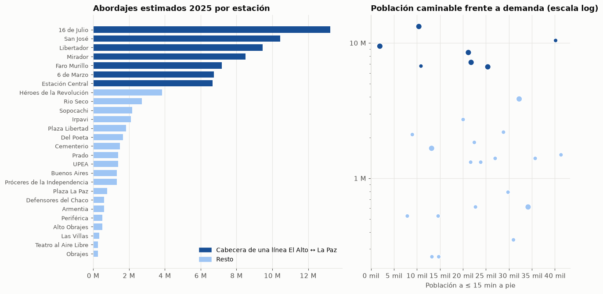
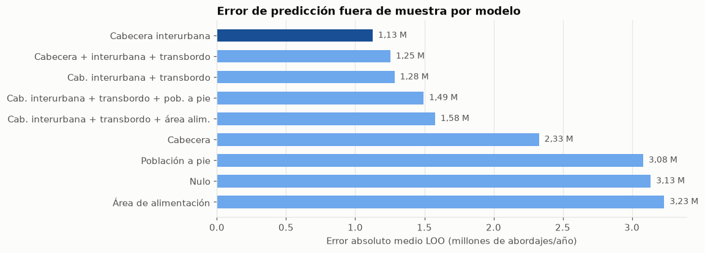
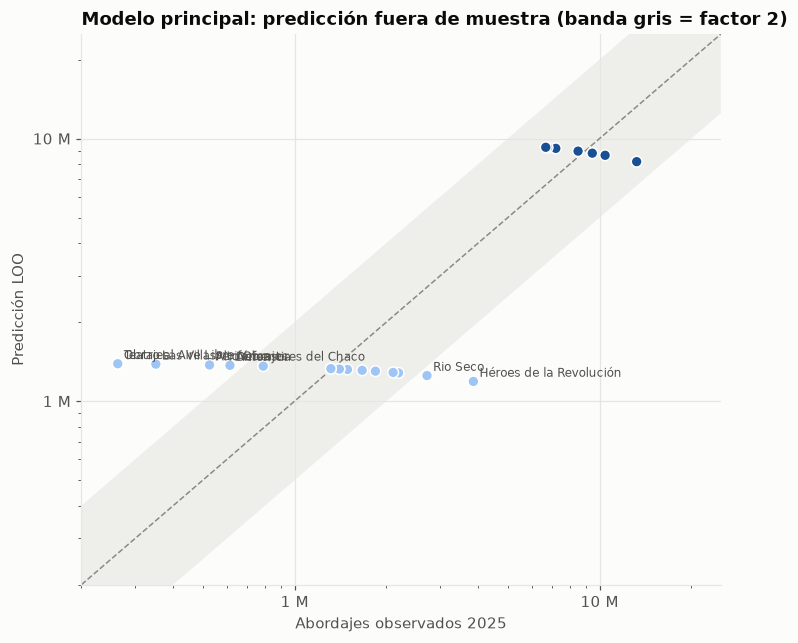

04 · Modelo de demanda por estación: ¿qué hace que una estación tenga pasajeros?
Pregunta: ¿de qué depende el número de abordajes de una estación y cuántos pasajeros al año podría captar una estación nueva?
Datos (teleferico.demand_model): - Variable respuesta: abordajes estimados de 2025 por estación física (ranking del PDF de Mi Teleférico, % con un decimal × total del año; error de ±0,05 pp × 87,7 M ≈ ±44 mil por andén). Los andenes de una estación de transbordo se suman. - Variables candidatas: población a ≤ 15 min a pie con pendiente (notebook 03), población del “área de alimentación” (estación más cercana en línea recta, a ≤ 3 km), cabecera de línea, línea que une El Alto con La Paz, transbordo, municipio, distancia al centro y años de operación.
Método: regresión binomial negativa (los conteos tienen mucha sobredispersión), con pocos modelos simples y validación leave-one-out (LOO). Con n = 26 se evita sobreinterpretar: se prefieren modelos de 1-2 variables y se reportan intervalos.
Ver código
import matplotlib.pyplot as pltimport matplotlib.ticker as mtickerimport numpy as npimport pandas as pdfrom matplotlib.patches import Patchfrom teleferico import demand_model as dmfrom teleferico import demanda, vizviz.estilo()pd.set_option("display.float_format", lambda x: f"{x:,.3f}")t = demanda.cargar()df = dm.variables(t)print("Líneas que unen El Alto con La Paz:", dm.lineas_interurbanas(t))cols = ["nombre", "municipio", "lineas", "y", "pob_15", "pob_voronoi_3km", "cabecera", "interurbana","cabecera_interurbana", "transbordo", "dist_centro_km", "anios_operacion"]df[cols].sort_values("y", ascending=False).set_index("nombre").style.format( {"y": viz.fmt_int, "pob_15": viz.fmt_int, "pob_voronoi_3km": viz.fmt_int, "dist_centro_km": "{:.1f}"})
Líneas que unen El Alto con La Paz: ['Amarilla', 'Morada', 'Roja']
municipio
lineas
y
pob_15
pob_voronoi_3km
cabecera
interurbana
cabecera_interurbana
transbordo
dist_centro_km
anios_operacion
nombre
16 de Julio
El Alto
Azul, Plateada, Roja
13.238.503
10.423
27.439
1
1
1
1
3.3
12
San José
La Paz
Morada
10.432.993
40.150
27.080
1
1
1
0
0.5
8
Libertador
La Paz
Amarilla, Celeste, Verde
9.468.598
1.942
13.723
1
1
1
1
3.2
12
Mirador
El Alto
Amarilla, Plateada
8.504.204
21.185
42.916
1
1
1
1
3.0
12
Faro Murillo
El Alto
Morada, Plateada
7.189.121
21.785
27.883
1
1
1
1
2.8
8
6 de Marzo
El Alto
Morada
6.750.760
10.880
88.774
1
1
1
0
4.8
8
Estación Central
La Paz
Naranja, Roja
6.663.088
25.406
43.573
1
1
1
1
1.3
12
Héroes de la Revolución
La Paz
Blanca, Naranja
3.857.577
32.230
75.391
1
0
0
1
1.8
9
Rio Seco
El Alto
Azul
2.717.838
20.048
124.786
1
0
0
0
8.1
9
Sopocachi
La Paz
Amarilla
2.191.805
28.816
31.301
0
1
0
0
2.1
12
Irpavi
La Paz
Verde
2.104.133
9.000
57.005
1
0
0
0
6.8
12
Plaza Libertad
El Alto
Azul
1.841.116
22.480
34.897
0
0
0
0
4.3
9
Del Poeta
La Paz
Blanca, Celeste
1.665.772
13.193
14.949
1
0
0
1
2.1
8
Cementerio
La Paz
Roja
1.490.428
41.325
49.581
0
1
0
0
2.1
12
Prado
La Paz
Celeste
1.402.755
35.717
9.330
1
0
0
0
0.5
8
UPEA
El Alto
Azul
1.402.755
27.014
60.240
0
0
0
0
6.4
9
Próceres de la Independencia
La Paz
Blanca
1.315.083
21.687
9.973
0
0
0
0
1.6
8
Buenos Aires
La Paz
Amarilla
1.315.083
23.872
39.541
0
1
0
0
2.4
12
Plaza La Paz
El Alto
Azul
789.050
29.809
45.240
0
0
0
0
5.3
9
Armentia
La Paz
Naranja
613.705
22.732
19.504
0
0
0
0
0.7
9
Defensores del Chaco
La Paz
Blanca, Café
613.705
34.168
19.393
1
0
0
1
1.4
8
Alto Obrajes
La Paz
Verde
526.033
14.619
24.145
0
0
0
0
3.8
12
Periférica
La Paz
Naranja
526.033
7.912
28.043
0
0
0
0
1.1
9
Las Villas
La Paz
Café
350.689
30.988
72.645
1
0
0
0
2.0
8
Obrajes
La Paz
Verde
263.017
13.260
36.868
0
0
0
0
4.9
12
Teatro al Aire Libre
La Paz
Celeste
263.017
14.745
8.859
0
0
0
0
1.2
8
1. Exploración: la demanda la mueven las “puertas” entre El Alto y La Paz
Ver código
d = df.sort_values("y")COL = {1: viz.SECUENCIAL[5], 0: viz.SECUENCIAL[1]}fig, axs = plt.subplots(1, 2, figsize=(12, 6.2), gridspec_kw={"width_ratios": [1.25, 1]})ax = axs[0]ax.barh(d["nombre"], d["y"], color=d["cabecera_interurbana"].map(COL), height=0.7)ax.xaxis.set_major_formatter(mticker.FuncFormatter(viz.millones))ax.grid(axis="y", visible=False)ax.tick_params(axis="y", labelsize=8.5)ax.legend(handles=[Patch(color=COL[1], label="Cabecera de una línea El Alto ↔ La Paz"), Patch(color=COL[0], label="Resto")], loc="lower right", fontsize=9)ax.set_title("Abordajes estimados 2025 por estación")ax = axs[1]for v, g in df.groupby("cabecera_interurbana"): ax.scatter(g["pob_15"], g["y"], color=COL[v], s=np.where(g["transbordo"] ==1, 80, 40), edgecolor="white", zorder=3)ax.set_yscale("log")ax.yaxis.set_major_formatter(mticker.FuncFormatter(lambda x, _: viz.millones(x) if x >=1e6else viz.miles(x)))ax.xaxis.set_major_formatter(mticker.FuncFormatter(viz.miles))ax.set_xlabel("Población a ≤ 15 min a pie")ax.set_title("Población caminable frente a demanda (escala log)")fig.tight_layout()viz.guardar(fig, "04_exploracion")plt.show()rho = df[["l_pob_15", "l_pob_voronoi_3km", "cabecera", "interurbana", "cabecera_interurbana", "transbordo","el_alto", "dist_centro_km", "anios_operacion"]].corrwith(np.log(df["y"]), method="spearman")rho.sort_values(ascending=False).to_frame("Spearman con log(abordajes)")

Spearman con log(abordajes)
cabecera_interurbana
0.769
interurbana
0.691
cabecera
0.618
transbordo
0.517
el_alto
0.406
l_pob_voronoi_3km
0.176
anios_operacion
0.164
dist_centro_km
0.151
l_pob_15
-0.077
Lectura: - Las 7 estaciones con más abordajes son exactamente las cabeceras de las 3 líneas que unen El Alto con La Paz (Roja, Amarilla y Morada): 16 de Julio, Mirador, Faro Murillo y 6 de Marzo arriba; San José, Libertador y Estación Central abajo. Juntas suman el 71 % de los abordajes, con entre 6,7 y 13,2 M cada una. La octava (Héroes de la Revolución) ya baja a 3,9 M. - La correlación más alta con la demanda es la de esa variable (ρ = 0,77). Siguen la línea interurbana (0,69), la cabecera de cualquier línea (0,62) y el transbordo (0,52). - La población caminable no se asocia con la demanda (ρ = −0,08), y el área de alimentación de 3 km apenas lo hace (0,18). Confirma lo visto en el notebook 03: las estaciones grandes captan viajes que llegan en minibús y transbordo, no de su vecindario.
2. Comparación de modelos (binomial negativa, validación leave-one-out)
Métricas LOO: cada estación se predice con un modelo ajustado sin ella. loo_mae es el error absoluto medio en pasajeros/año, loo_dev_poisson la devianza de Poisson media (castiga más los errores relativos en estaciones chicas) y loo_r2_log el R² en escala logarítmica.
c = comp.sort_values("loo_mae")fig, ax = plt.subplots(figsize=(9, 3.8))colores = [viz.SECUENCIAL[5] if i ==0else viz.SECUENCIAL[2] for i inrange(len(c))]ax.barh(c.index, c["loo_mae"] /1e6, color=colores, height=0.6)for i, v inenumerate(c["loo_mae"] /1e6): ax.text(v +0.04, i, f"{viz.num(v, 2)} M", va="center", fontsize=9, color=viz.TINTA_2)ax.invert_yaxis()ax.grid(axis="y", visible=False)ax.set_xlabel("Error absoluto medio LOO (millones de abordajes/año)")ax.set_title("Error de predicción fuera de muestra por modelo")viz.guardar(fig, "04_comparacion_modelos")plt.show()

Lectura: - El mejor modelo fuera de muestra es el más simple: solo cabecera_interurbana (error LOO de 1,13 M frente a 3,13 M del modelo nulo; R² LOO en log de 0,60). - Agregar transbordo, población a pie o área de alimentación empeora el error LOO (1,25-1,58 M). Con 26 estaciones, cada variable extra sobreajusta. - Los modelos con solo población son tan malos como el nulo. La hipótesis 3 del plan no se sostiene tal como estaba planteada: la demanda observada no se explica por la población del área de influencia a pie, sino por el rol de la estación en la red.
3. Modelos elegidos
Principal:cabecera_interurbana (menor error LOO).
Extendido (para la sensibilidad del notebook 05): cabecera_interurbana + transbordo + log(pob. a pie). Su error LOO es algo mayor, pero permite que la población caminable mueva la predicción.
Los coeficientes se leen como multiplicadores (exp(β)): cuántas veces más abordajes tiene una estación con el atributo, o por cada vez que se multiplica por e la población.
Ver código
principal = dm.ajustar(dm.MODELOS["Cabecera interurbana"], df)extendido = dm.ajustar(dm.MODELOS["Cab. interurbana + transbordo + pob. a pie"], df)def multiplicadores(res): ci = res.conf_int() out = pd.DataFrame({"coef": res.params, "p_valor": res.pvalues, "ic95_inf": ci[0], "ic95_sup": ci[1]}) out = out.drop(index="alpha") out[["exp_coef", "exp_inf", "exp_sup"]] = np.exp(out[["coef", "ic95_inf", "ic95_sup"]])return outprint(f"Principal: alpha = {principal.params['alpha']:.2f}; base (estación común) = "f"{viz.fmt_int(np.exp(principal.params['Intercept']))} abordajes/año")display(multiplicadores(principal))print(f"Extendido: alpha = {extendido.params['alpha']:.2f}")multiplicadores(extendido)
Principal: alpha = 0.38; base (estación común) = 1.328.926 abordajes/año
coef
p_valor
ic95_inf
ic95_sup
exp_coef
exp_inf
exp_sup
Intercept
14.100
0.000
13.824
14.376
1,328,926.000
1,008,486.473
1,751,182.946
cabecera_interurbana
1.901
0.000
1.369
2.433
6.691
3.932
11.388
Extendido: alpha = 0.35
coef
p_valor
ic95_inf
ic95_sup
exp_coef
exp_inf
exp_sup
Intercept
13.921
0.000
13.511
14.332
1,111,508.619
737,228.113
1,675,806.156
cabecera_interurbana
1.778
0.000
1.177
2.380
5.920
3.245
10.802
transbordo
0.386
0.180
-0.178
0.949
1.471
0.837
2.584
l_pob_15
0.122
0.505
-0.238
0.483
1.130
0.788
1.620
Lectura: - Una estación “común” capta en promedio ~1,3 M de abordajes/año (IC 95 % de la media: 1,0-1,8 M). - Ser cabecera de una línea El Alto ↔︎ La Paz multiplica la demanda por ~6,7 (IC 95 %: 3,9-11,4). - En el modelo extendido, el transbordo multiplica por 1,5 y duplicar la población a pie, por ~1,09 (elasticidad 0,12). Ninguno de los dos es significativo (p = 0,18 y 0,51), así que el modelo extendido solo se usa como sensibilidad. - La sobredispersión es alta (α ≈ 0,35-0,38): incluso con el mismo perfil, las estaciones varían mucho.
4. Predicción fuera de muestra (LOO) frente a lo observado
Ver código
p = preds["Cabecera interurbana"].rename("pred").to_frame().join(df.set_index("slug")[["nombre", "y", "cabecera_interurbana"]])fig, ax = plt.subplots(figsize=(7.5, 6.5))ax.scatter(p["y"], p["pred"], c=p["cabecera_interurbana"].map(COL), s=50, edgecolor="white", zorder=3)lim = [2e5, 2.5e7]ax.plot(lim, lim, color=viz.TINTA_3, lw=1, ls="--")ax.fill_between(lim, [x /2for x in lim], [x *2for x in lim], color=viz.GRILLA, alpha=0.6, lw=0)for r in p.itertuples():if r.pred / r.y >2or r.y / r.pred >2: ax.annotate(r.nombre, (r.y, r.pred), xytext=(4, 3), textcoords="offset points", fontsize=8, color=viz.TINTA_2)ax.set_xscale("log")ax.set_yscale("log")ax.set_xlim(lim)ax.set_ylim(lim)fmt = mticker.FuncFormatter(lambda x, _: viz.millones(x) if x >=1e6else viz.miles(x))ax.xaxis.set_major_formatter(fmt)ax.yaxis.set_major_formatter(fmt)ax.set_xlabel("Abordajes observados 2025")ax.set_ylabel("Predicción LOO")ax.set_title("Modelo principal: predicción fuera de muestra (banda gris = factor 2)")viz.guardar(fig, "04_loo")plt.show()dentro = ((p["pred"] / p["y"]).between(0.5, 2)).mean() *100print(f"Estaciones con predicción LOO dentro de un factor 2: {dentro:.0f} %")

Estaciones con predicción LOO dentro de un factor 2: 65 %
5. Contraste: demanda acumulada 2014-2025
El plan propone usar el acumulado como contraste. Como las líneas abrieron en años distintos, se usa el promedio anual del acumulado (acumulado / años de operación) con el mismo modelo.
Ver código
acum = demanda.estaciones_fisicas(t, periodo="2014_2025")[["slug", "pasajeros_est"]].rename( columns={"pasajeros_est": "acumulado"})df_ac = df.merge(acum, on="slug")df_ac["y"] = (df_ac["acumulado"] / df_ac["anios_operacion"]).round()filas = []for nombre in ["Cabecera interurbana", "Cab. interurbana + transbordo + pob. a pie"]:for etiqueta, datos in (("2025", df), ("Promedio 2014-2025", df_ac)): r = dm.ajustar(dm.MODELOS[nombre], datos) filas.append({"modelo": nombre, "respuesta": etiqueta,**{f"exp({k})": np.exp(v) for k, v in r.params.drop("alpha").items()}})pd.DataFrame(filas).set_index(["modelo", "respuesta"])
exp(Intercept)
exp(cabecera_interurbana)
exp(transbordo)
exp(l_pob_15)
modelo
respuesta
Cabecera interurbana
2025
1,328,926.000
6.691
NaN
NaN
Promedio 2014-2025
1,105,100.421
5.831
NaN
NaN
Cab. interurbana + transbordo + pob. a pie
2025
1,111,508.619
5.920
1.471
1.130
Promedio 2014-2025
888,472.238
5.142
1.572
1.155
Lectura: con el promedio anual del acumulado 2014-2025, la estructura se mantiene: la cabecera interurbana multiplica por 5,8 (frente a 6,7 en 2025) y la base es de ~1,1 M. El hallazgo no es un efecto de 2025: es estructural desde que existe la red.
6. Predicción para estaciones hipotéticas (con intervalos)
Se simulan 5.000 escenarios: los coeficientes se toman de su distribución estimada y los pasajeros de una binomial negativa. El intervalo del 90 % refleja la incertidumbre del modelo y la variabilidad entre estaciones, que es muy grande.
Ver código
escenarios = dm.transformar(pd.DataFrame({"escenario": ["Estación común (sin transbordo), 20 mil vecinos a pie","Estación común (sin transbordo), 40 mil vecinos a pie","Estación de transbordo, 20 mil vecinos a pie","Cabecera de una nueva línea El Alto ↔ La Paz"],"cabecera_interurbana": [0, 0, 0, 1], "transbordo": [0, 0, 1, 0],"pob_15": [20_000, 40_000, 20_000, 20_000], "pob_voronoi_3km": [50_000] *4,}))filas = []for nombre, res in (("Principal", principal), ("Extendido", extendido)): sim = dm.simular(res, escenarios)for i, e inenumerate(escenarios["escenario"]): filas.append({"modelo": nombre, "escenario": e, **dm.intervalo(sim[:, i])})pred = pd.DataFrame(filas).set_index(["escenario", "modelo"]).sort_index()pred.style.format(lambda x: f"{x /1e6:,.2f} M")
media
p05
p50
p95
escenario
modelo
Cabecera de una nueva línea El Alto ↔︎ La Paz
Extendido
7.51 M
1.68 M
6.32 M
17.05 M
Principal
9.21 M
2.01 M
7.77 M
21.17 M
Estación común (sin transbordo), 20 mil vecinos a pie
Extendido
1.19 M
0.27 M
1.04 M
2.60 M
Principal
1.33 M
0.33 M
1.17 M
2.97 M
Estación común (sin transbordo), 40 mil vecinos a pie
Extendido
1.33 M
0.32 M
1.16 M
2.88 M
Principal
1.34 M
0.29 M
1.17 M
2.96 M
Estación de transbordo, 20 mil vecinos a pie
Extendido
1.86 M
0.43 M
1.57 M
4.28 M
Principal
1.34 M
0.32 M
1.17 M
2.96 M
Lectura: - Una estación nueva común (sin transbordo ni rol de puerta El Alto ↔︎ La Paz) captaría ~1,2-1,3 M de abordajes/año, con un intervalo del 90 % muy amplio (0,3-3,0 M). Pasar de 20 a 40 mil vecinos a pie casi no cambia la predicción. - Una nueva cabecera El Alto ↔︎ La Paz captaría ~7,5-9 M (1,7-21 M): un orden de magnitud más. - El modelo sobreestima las estaciones chicas de La Paz (Las Villas, Obrajes, Teatro al Aire Libre: 0,26-0,35 M observados frente a ~1,4 M predichos) y subestima Héroes de la Revolución y Río Seco. El 65 % de las estaciones queda dentro de un factor 2 en la validación LOO.
7. Conclusiones
#
Hallazgo
Implicación
1
Las 7 cabeceras de las líneas Roja, Amarilla y Morada concentran el 71 % de los abordajes
La red funciona como un sistema de puertas entre El Alto y La Paz alimentado por minibús
2
El mejor modelo (LOO) usa una sola variable, cabecera_interurbana: ×6,7 sobre una base de ~1,3 M/año
Simple, estable (se repite con el acumulado 2014-2025) y fácil de comunicar
3
La población a pie no explica la demanda (ρ = −0,08; no significativa en el modelo)
La hipótesis 3 se reformula: la población del área de influencia explica poco. Pesa el rol en la red
4
Error LOO de 1,13 M/año; 65 % de las estaciones dentro de un factor 2; intervalos de predicción muy amplios
Las estimaciones de pasajeros de la Fase 5 son órdenes de magnitud, no pronósticos
5
Una estación común nueva: ~1,3 M/año (IC 90 %: 0,3-3,0 M). Una nueva puerta El Alto ↔︎ La Paz: ~7,5-9 M
Para la demanda, conectar El Alto con La Paz vale más que cubrir vecindarios
Implicación para el notebook 05: la optimización maximiza la cobertura (acceso a pie, equidad), y el modelo traduce cada estación nueva a pasajeros. Una línea interna de El Alto que alimente una estación existente capta del orden de 1,3 M por estación. Si la línea crea una nueva conexión directa con La Paz, el potencial es mucho mayor, pero eso ya no se mide con la población caminable.
Anexo: exportación de datos para el sitio
Ver código
from teleferico.export_web import exportar_modelo_demandaexportar_modelo_demanda(df, comp, preds)